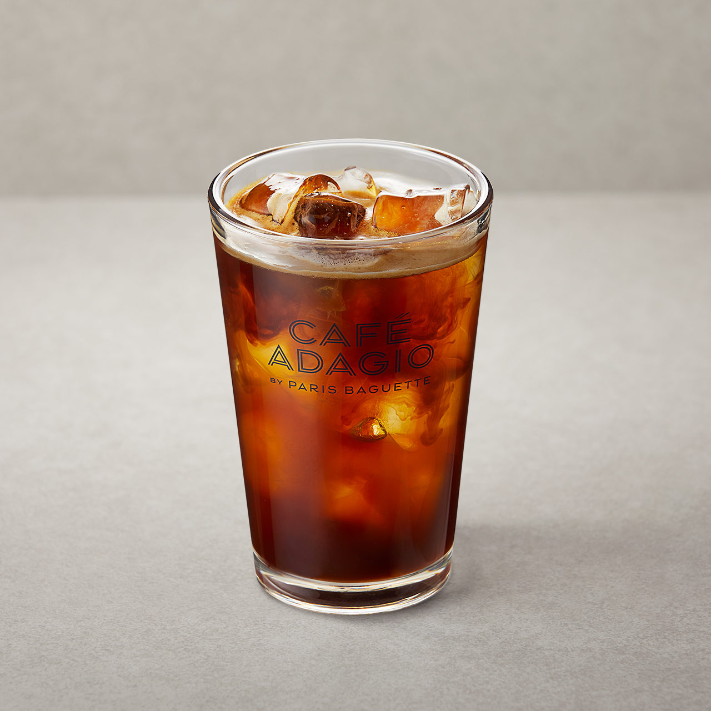

<!-- CSS 참조 방식
 외부스타일 시트: css 확장자를 가진 스타일 시트 파일 생성 HTML,문서에 연결해서 사용
 내부 스타일 시트: CSS를 정의 할때 <style> 태그를 이용해 css 정의한 방식 "이 방식으로 공부"
 HTML 태그 내의 스타일 지정: HTML 태그 안에 style 속성을 이용해 정의 하는 방법 직관적이기 때문에 사용 
html은 위에서 부터 하나 실행 하기 때문에 스타일을 먼저 읽도록 헤드에 스타일을 둬야 한다. -->

<!-- 선택자{프로퍼티:값;}
예) p{color:red;padding:5px;}
프로퍼티:
color, background-color
font-size, font-weight, 
font-family: 글꼴 선택
margin: 안쪽 여백
padding: 바깥쪽 여백 -->

<!-- 선택자
단일 선택자:
1. 전체 선택자(*): 모든 요소(모든 태그)를 칭함 폰트 등을 설정할때 많이 사용 
2. 태그 선택자: 태그(p,h1,hr 등등를 적고 안에 속성을 적는 
3. 클래스 선택자: 어떤 글래스를 만들어서 그 클래스 이름을 가진 태그한테만 적용하겠다. .으로 시작해야 함
예) .orange{color: red;;}
4. 아이디 선택자: 클래스와 비슷하지만 고유값이기 때문에 중복값이 존재 할 수 없다.   #으로 시작해야 함
예) #orange{color: red;;}

복합 선택자:
1. 하위 선택자: 선택자(공백)선택자 #div2 .apple
예) div .orange : div 안에있는 오랜지를 선택해라
1.1자식 선택자: >. 예) #div2 >.apple
1.2자손 석택자:    예) #div2 > .apple
1.3형제 선택자: 
1.3.1인접 형제 선택자: 클래스 + 태그  예) .apple + p 바로 아래 붙어 있는 인접한 형제에만 적용이 됨
1.3.2일반 형제 선택자: 클래스 ~ 태그 예) .apple ~ p 자신과 같은 열에 있는 형제 모두에게 적용

가상 선택자:
1. 어떠한 상황이 일어났을때 바뀌는 것 
hover:마우스를 올려놨을때 행동이 일어남
link,visited: 하이퍼 링크에서 경로를 갔다 왔는지 유무 판별
active: 클릭을 했을때
focus:

first-child: 첫번째 있는 태그에 적용 예) -->
last-child: 마지막에 있는 태그에 적용
nth-child(적용을 원하는 번째) : 전체 태그 기준으로
예)div div:first-child: 디브 태그 안에 첫번째 태그가 디브라면 적용시켜라
   div span:lsat-child: 디브 태그 안에 마지막 자식이 스판태그라면 적용시켜라
   div h2:nth-child(2) 디브 태그 안에 2번째 자식이 h2라면 적용시켜라


<html>
    <head>
        <style>
            /* .red{color:red;}
            .deco{text-decoration: underline ;}
            #hrid(border:3px .red:solid)             */
            /* *{ 
                color:red;
                font-family: georgia, cursive; }
                /* 첫번째로 georgia 사용하고 안되면 cursive 사용 */
            
            /* h1 {
                color: red;
            }
            h2{
                color: blue; text-decoration: underline;
            }
            h3{color: green; text-shadow: 3px 3px 3px  black;}
            hr{ border:  5px;  border-style: dotted solid; color: yellow}
            p{background-color: black; color:white;}
            img{cursor:pointer; margin-left:100px; height: 500; width: 500;}
            div{ cursor:5px red solid; height: 100px; width:100px;
            border-radius:1000px;background-color: pink;} */
           
            /* #div2{background-color:yellow;}
            #div2 .apple{color: green;} */

            /* div{width:100px; height:100px; background-color:yellow;}
            div:hover{cursor:pointer; background-color:blue;}
            a{ color:black;}
            p:active{color:red;}
            input:focus{background-color: blue;}
            a:link{color:yellow;}
            a:visited{color:green;} */

           .fruits span:last-child {
            color:red;
           }
        </style>
    </head>

    <body>
      
        <div class="fruits">
            <span>딸기</span>
            <span>수박</span>
            <div>오렌지</div>
            <p>망고</p>
            <h3>사과</h3>
        </div>

        <!-- <div></div>
        <a href="www.naver.com"></a> a태그</a>
        <a href="www.naver.com"></a> a태그2</a>
        <p>p태그</p>
        <input type="text"> -->
        <!-- <div>
            <div id="div2">
                <p class="apple">1</p>
                <p class="apple">2</p>
                
            <div>
                <p class="apple">3</p>
            </div>
            <p class="apple">4</p>


        </div> -->
 
 
        <!-- <<h1 class="deco">h1</h1>
        <h2 class="red deco">h2</h2>
        <h3>h3</h3>
        <hr>
        <p>p1</p>
        <p>p2</p>
        
        <div></div>  -->
    </body>
 </html>